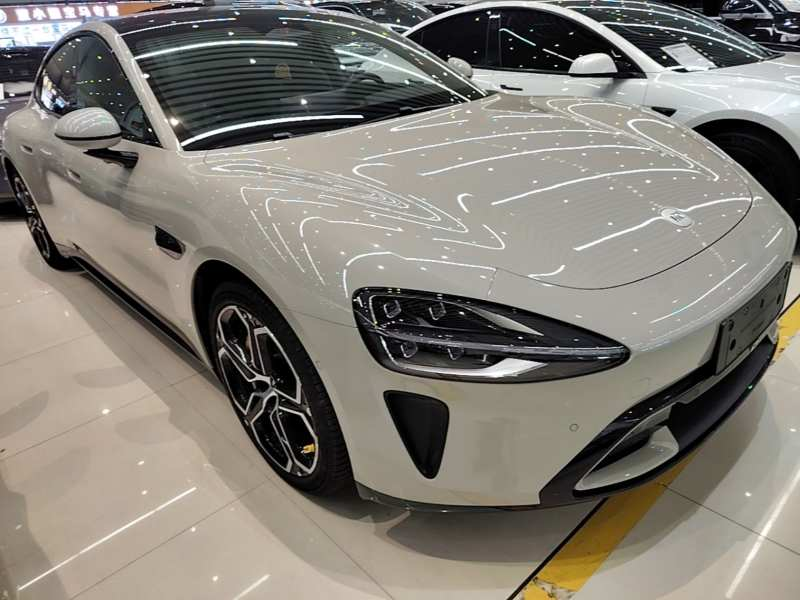
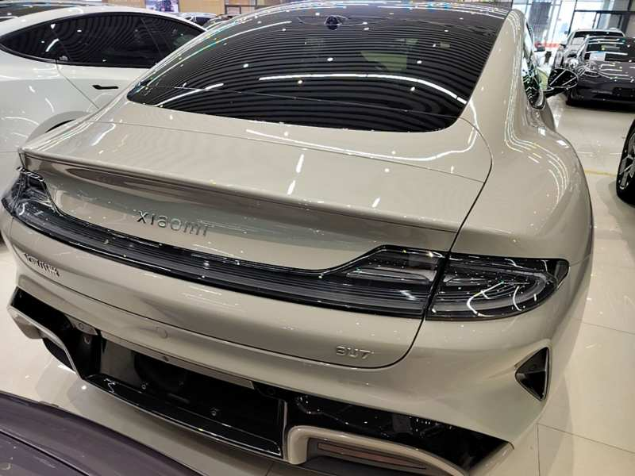
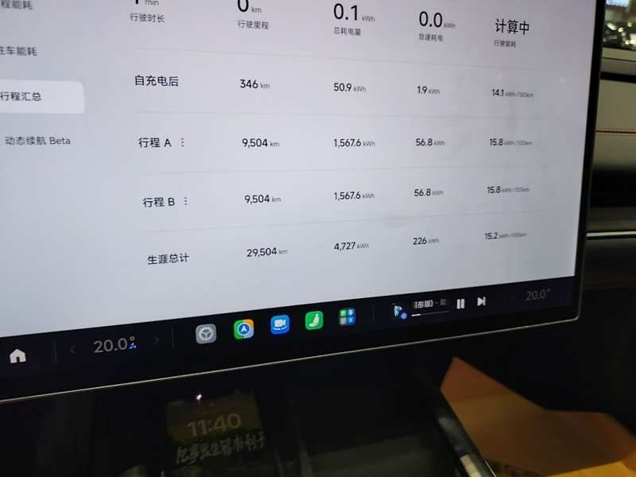
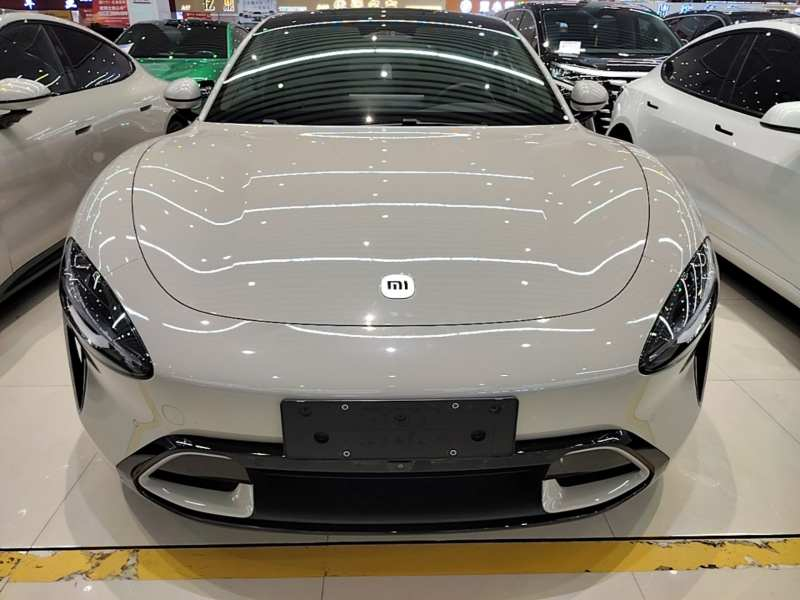

Ocena Guazi A · bateria 91% · 29500 km
Xiaomi zrobiło samochód. My go sprowadzamy.
Osiągi i technologia za ułamek ceny europejskiego odpowiednika.
Zapytaj o ofertęZdjęcia tego egzemplarza







Co dostajesz w tym aucie
Rankingi (przyspieszenie, zasięg, oceny marek) jako wejście — jedna liczba, którą da się zapamiętać.
2024
29500
5
0
91
571 / 628
Raport inspekcji Guazi tego auta
Ocena Guazi
A
Stan baterii
91%
Przebieg i właściciele
29500 km · właścicieli: 0
Wiesz, ile zapłacisz do odbioru w Polsce
[X cena do odbioru w PLN]
W cenie: auto, transport, cło, akcyza, VAT, rejestracja.
[X rata od partnera finansowego]
[X termin odbioru w tygodniach]
Najczęstsze obawy
Co powiedzą znajomi
Opinie właścicieli z Polski z nazwą modelu i przebiegiem — nie gwiazdki.
Kupuję auto, którego nie widziałem
Raport z inspekcji (przykład do pobrania) + zasady zaliczki: ile, kiedy, kiedy wraca.
Gdzie to serwisować
Kto serwisuje ten model w Polsce, ile trwa sprowadzenie typowych części, ile kosztuje przegląd.
Czy będzie po polsku
Przy każdym modelu: język menu, CarPlay/Android Auto, kto i kiedy to ustawia, koszt.
Czy chińskie auta mają homologację i certyfikaty dopuszczające do ruchu w Polsce?›
[X odpowiedź]
Jakie są opinie o chińskich samochodach?›
[X odpowiedź]
Który z chińskich samochodów ma najlepsze opinie?›
[X odpowiedź]
Czy import chińskiego elektryka do Polski w ogóle się opłaca, czy lepiej kupić na miejscu?›
[X odpowiedź]
Jakie opinie użytkowników mają chińskie auta po kilku latach eksploatacji?›
[X odpowiedź]
Co się dzieje z gwarancją i serwisem, jeśli chiński elektryk zawiedzie?›
[X odpowiedź]